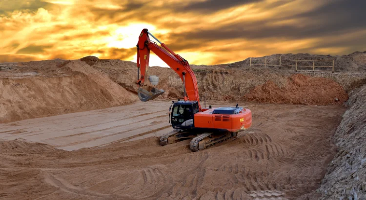
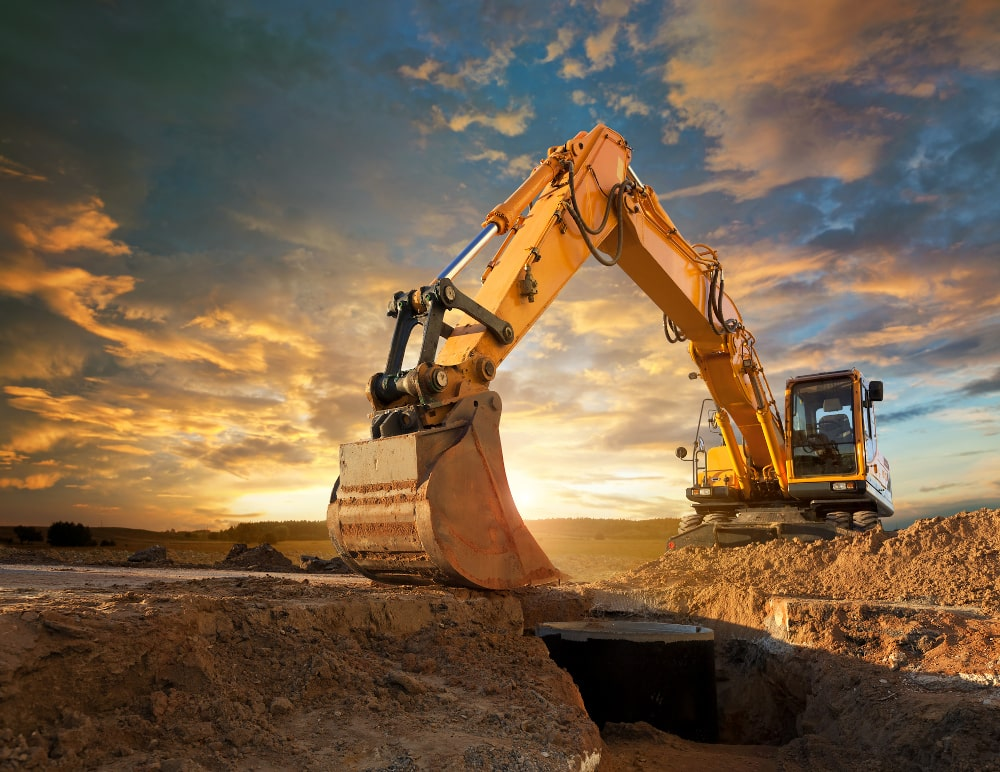
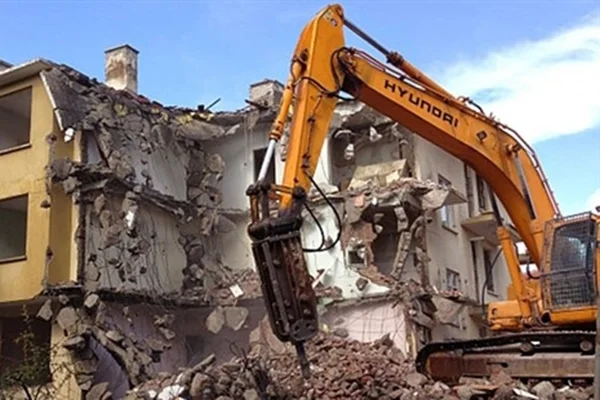
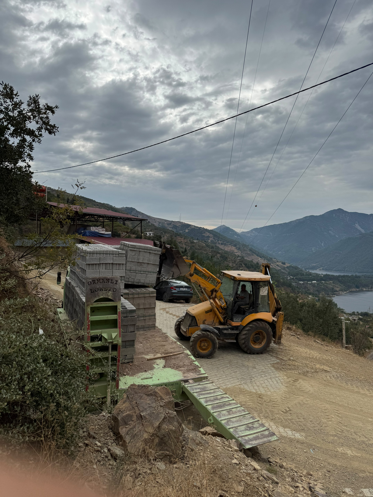

İnşaat,Kazı,Dolgu ve Hafriyat işlerinde Güvenilir ,kaliteli ve zamanında hizmet sunuyoruz.
Bize Ulaşın
Projenize uygun boyutlarda profesyonel temel kazı ve dolgu işlemleri yapıyoruz.

Kanalizasyon, su ve elektrik hatları için hassas ve güvenli altyapı kazıları yapıyoruz.

Güvenli ve kontrollü bir şekilde bina yıkım ve kırım işlemlerini gerçekleştiriyoruz.

Demir, Çimento ,pirket, Kum ve temel inşaat malzemelerinin toptan ve perakende satışı yapılır.
Kılınç Hafriyat olarak, uzun yıllara dayanan tecrübemiz ve geniş iş makinesi parkurumuzla hafriyat, kazı, dolgu ve yıkım işlerinde güvenilir çözümler sunuyoruz.
Müşteri memnuniyetini ve iş güvenliğini her zaman ön planda tutarak projelerinizi zamanında teslim ediyoruz.
İnşaat projeleriniz için ihtiyacınız olan kaliteli malzemeleri temin ediyoruz: